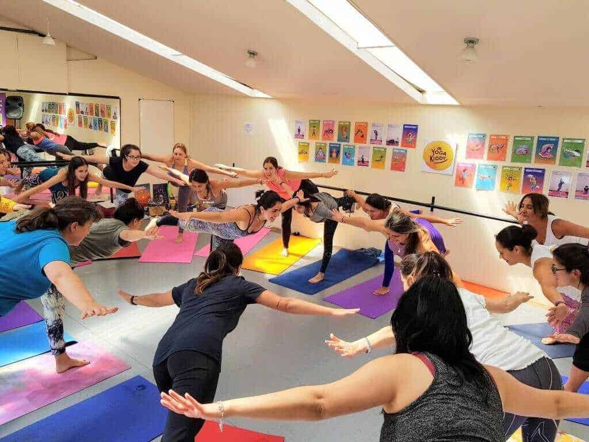

Madhu, entrenadora YogaKiddy, enseñando la postura del Avión durante la Formación Internacional de Monitor de Yoga Infantil en Viña del Mar, Chile.
Para grandes transformaciones necesitamos unificar energías y valorar el trabajo en equipo, donde cada ser que compone la red colabora con sus capacidades y cualidades…
Ese es uno de los pilares más importantes de nuestra Formación, resignificar las individualidades para favorecer las redes que hoy día necesitamos?
Si conscientizamos nuestra individualidad de manera amorosa y respetuosa, integrando toda nuestra historia y sosteniendo con valor a la niña que fuimos y que somos, podremos aportar de manera sincera, noble y consecuente al desarrollo integral de niños y niñas.
Estas hermosas mujeres están en ese camino! Eligieron el Yoga como recurso para ellas y el mundo! ?
Gracias por confiar en nuestro equipo y por los despertares que se vienen!
A Lisette le encantó la Formación de Monitor de Yoga para Niños de Vina del Mar en Chile.
En la sonrisa de Lisette vemos su encanto con la Formación de Monitor de Yoga Infantil que ofreció YogaKiddy en Viña del Mar, Chile.
Además de su evidente felicidad, ella manifiesta que le encantó, que le pareció además un programa muy completo, que brinda muchas herramientas para ser aplicadas en las actividades que desarrollará pronto con pequeños infantes a los que podrá transmitir todo su conocimiento.
Lisette se va completa y “llenita de muchos juegos para jugar con todos los niños”, tal como hermosamente manifiesta en el video.
Ella termina dándonos un agradecimiento, pero la verdad es que somos nosotros quienes le agradecemos su entrega y empatía con esta hermosa labor en la que creemos profundamente. ¡Enhorabuena, Lisette!
Karen se va con todas las herramientas para emprender su camino
Nuestra querida Karen participó en la jornada de dos días para instruirse en Monitor de Yoga Infantil, que esta vez fue impartida en Viña del Mar, Chile.
Con mucha amabilidad ella nos cuenta que está muy contenta con su preparación en esta disciplina, considera que ha sido un programa muy completo a nivel instructivo, ya que siente que se le proporcionó material e información amplios para recorrer el futuro.
Asimismo, comenta que si alguien desea invertir tiempo y alma en esta labor, de YogaKiddy se irá muy contento, con información realmente valiosa que podrá proyectarse en los más pequeños de casa. Sea quien sea, aquél que quiera aprender, obtendrá los conocimientos, juegos y dinámicas que necesita para emprender su camino.
Karen termina recomendándolo 100%, y nosotros queremos darle las gracias por su participación.
Donatella se va de la Formación de Monitor de Yoga para Niños con el corazón contento
Donatella está feliz de haber invertido su fin de semana en este curso, nos cuenta que se va con el corazón contento y también lo recomienda al 100%.
Es grato saber que quienes imparten los conocimientos le resultaron muy profesionales, y que asimismo asegura a los oyentes que aquél que desee aprender, o ser Monitor de Yoga Infantil, con YogaKiddy tendrá una grata y enriquecedora experiencia.
¡Un millón de gracias, Donatella!
María Cristina se va deseosa de aplicar sus conocimientos en todos los ámbitos
Nuestra querida María Cristina ha dado un testimonio muy valioso, que realmente demuestra cómo ha capturado la esencia de esta Formación como Monitor de Yoga para Niños.
Le cuenta a la audiencia que se va con muchísima información que valora, así como aprecia el compañerismo y el profesionalismo del curso.
Satisfecha con el material del cual seguirá sacando provecho a lo largo de su vida, nos comenta que aún le queda mucho por aprender, y que aplicará al máximo los conocimientos.
Esto es fundamental, ya que María Cristina ha entendido que esto puede aplicarlo en todos los ámbitos de su vida, así como ha podido internalizar la importancia de usar la creatividad para trabajar con los niños.
Ella desea darle a los pequeños el trato que merecen, y nosotros estamos muy agradecidos con sus palabras.
No olvidaremos esa valiosa sonrisa con la cual se despide.